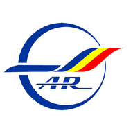

Cunoașterea Generală a Aeronavei Planor
Pregătire Examen Licență – Aeroclubul României
Materiale, finețe, geometrie, solicitări mecanice
Clasificare FAI, sustainer, TMG, performanță
Pitot-static, altimetrie, vitezometru, variometru
AFM, checklist, navigabilitate, limitări
Montare, curățare, manevrare, acumulator